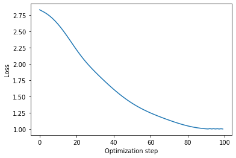
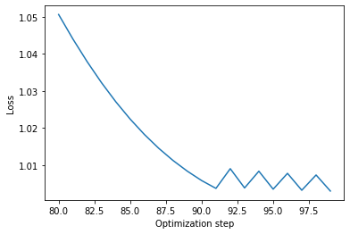

Word embeddings are one of the most important achievements in Natural Language Processing (NLP) of recent years. Unlike the tinier and tinier percentage improvement achieved on some famous task, that are usually the highlight of many papers, word embeddings are a conceptual achievement.
Today, they are so well-known that every more word of mine about them would be quite useless. But just to set the pace: the words embeddings are vectors of real numbers in a very high dimensional space (everywhere from 50 on), such that words that are “related” have similar embeddings. For example, “dog” and “puppy” should have similar embeddings. So should “dog” and “cat”, at least in some dimension, as they both refer to pets. Even “Berlin” and “Rome” should be quite similar in some directions, as they are both capital cities.
When I first heard about (and studied) word embeddings my reaction was– this is both genius and beautiful.
The idea of taking words from vocabulary and projecting them into a numerical space is, in my opinion, fascinating, brilliant and… good! It works amazingly well and has been the starting point of many revolutionary approaches in a lot of great applications.
Where do Embeddings Come from?
I’ve noticed that most explanations and tutorials about word embeddings, some of which are really well done, take off by talking about Neural Networks, Deep Learning and so on.
On the one hand, that’s just fine. For instance, this tutorial explains embeddings really well and presents them as the final state of an intermediate layer in a densely connected neural network. That works, and it’s a very little cute application of neural networks, powerful as usual (especially because they are universal approximators, as well known). Furthermore, that tutorial is very successful at explaining how training data are prepared for this application, which is very useful to know. All in all, I recommend reading it. It’s not by chance that is even recommended in Stanford’s class on NLP and Deep Learning.
On the other hand, that’s not the whole story. It can’t be the case that everything is always about Deep Networks.
And in fact, the original word embeddings paper (the “word2vec paper”, as it is usually referred to), doesn’t deal with networks. It makes heavy use of optimization though (and don’t get me started on why Deep Networks are “just” an application of Optimization).
With Networks, we have a nice visualization. We get layers and units (once upon a time called neurons). We get arrows to describe forward pass and backpropagation. And we don’t care too much about gradient descent as long as tensorflow (or a similar software) takes care of it (which is a bad approach, in my opinion).
Mathematical optimization gets us in the middle of our discomfort zone, as it’s a much more theoretical subject. That being said, I do believe it’s the forgotten key to open up any Deep Network secret. Not surprisingly, word embeddings come entirely from numerical optimization.
Objectives
This article’s primary goal is to clarify (to myself first) the details about how to get word embeddings using only numerical optimization. No machine learning techniques.
To do that, I will review the step-by-step optimization procedure that is introduced in the original word2vec paper. Understanding an optimization algorithm usually involves three steps, and this case is not an exception:
- Understanding optimization variables and constraints.
- Understanding the objective function.
- Understanding the iterative procedure to find the solutions.
The other key point to understand is how to match words to variables and parameters in an optimization algorithm. What words correspond to what variables? This is not a theoretical subject, and it simply means how the data (corpus) is organized before feeding it into the algorithm.
Last, but definitely not least, to fully grasp the most subtle details I will show a very simple experiment on how to run the optimization procedure, and what kind of result to expect from it in terms of word embeddings.
Data Preparation
The name “corpus” in NLP applications refers to a body of text, possibly made by multiple documents, each made of many paragraphs and sentences. Preparing a corpus for a word embeddings-based algorithm is a relatively simple procedure that has become quite standard in many applications. Let’s quickly review it.
The whole strategy is based on a “context-window approach”. The text is analyzed word by word, or even token by token (where a token can be a word, a punctuation symbol or a few more things), and each time a token is selected, it assumes the role of “center token”. Every token around it gets the role of context token.
How many context tokens there can be around a center token? It depends on a parameter, usually called window-size. This is an algorithm parameter (a hyperparameter, if you will) and it obviously affects the end result.
For each center word, and given the window size $w$, we can construct $w$ pairs of words. In each pair one element is the center word and the other is a context word.
Let’s see an example. It’s given the following sentence: “The apple is on the table.” and a window size equal to 2.
When the center word is “on”, we’ll get the following pairs: (apple, on), (is, on), (on, the), (on, table). Basically, we get 2 words on the left and two on the right of the center word and build pairs with them.
Clearly, when the center word is at the beginning of the sentence we can’t take too many words on its left side. This happens for instance when the center word is “apple”. Viceversa, when it’s near the end of the sentence (for example “table”) we can’t take many words on its right side.
All pairs we get from this procedure will form the input to the optimization algorithm. Let’s talk about that one.
Optimization Strategy
So far we’ve got a bunch of pairs of words, and we know we want to get word embeddings using them.
A good rule of thumb to design an optimization algorithm is to start with deciding about optimization variables and constraints. While doing this, keep in mind that the actual values of these variables change at each step of the optimization procedure, and that by the end of it we want to do something useful with those values!
In this specific application, we want to have the embeddings ready by the end of the optimization. Thus, there’s little doubt that we need to represent the embeddings within the optimization variables. The question is how.
A solution that makes the calculus simpler is to use two vectors for each word. One when that word is the center word, and the other when it’s a context word. Though this may seem odd initially, it does simplify the math a bit. The original word2vec paper contains more details about this trick, so I am going to refer you to it (see the references at the end).
There are no constraints on these vectors, except that they have to contain real numbers.
Remember: whatever optimization algorithm we use, for instance gradient descent, it will make some small changes to these vectors at each step of the procedure and by the end of it we should have meaningful (and useful) values in them.
The other key point of optimization is the cost function. This function is what steers the variables towards “better” values.
Consider an example: to optimize a gasoline car’s engine you may want to reduce emissions. Then you should design a cost function, computable via variables such as the rotational speed, friction, etc., that describes how the emissions relate to those variables. Then, to minimize that cost function effectively means to find values for those variables that reduce emissions.
Oftentimes the choice of the cost function is the real piece of creativity in the engineer’s work. And word embeddings is a very good example of it: in my opinion, it is where all the brilliance lies.
The starting point is that if two words appear very often in the same context window, then we want them to have similar embeddings. This is already a brilliant concept in itself, just that it has been repeated so many times that we have forgotten how clever it is.
Now, how to represent the information “two vectors are similar”? Luckily, the basics of algebra tell us that the higher the dot product between two vectors, the more similar they are. There’s a problem though: dot-product can be negative, and this is not good for optimization.
Meet the exponential function: it makes every positive (and bigger). Thus, we can use the exponential of the dot-product between two variables. Let’s call it A.
Things aren’t quite clear yet. Even if we compute that, how do we know that is “big”? How big is big? A billion, or more? There’s no space for subjectivity in optimization, we need a more absolute metric.
This is easily solvable. Let’s divide each A value by the same factor, and we would know how big are they with respect to the same factor. This is a common strategy indeed. But how to choose such a factor? There’s again a common solution to this problem: divide each term by the sum of all of them.
By doing this, we will know how big each A is with respect to the sum of all of them. Clever.
Let’s now go on to some more details. Let’s say two optimization variables are $x_i$ and $x_j$. They both correspond to word embeddings, for two different words.
When $x_j$ is the center word, the first term we need to compute is
$$ \exp (x_i^T x_j) $$
which is what I have called A so far. Then, let’s say we have a total of $V$ tokens, hence $V$ word embeddings and also $V$ optimization variables, each of a given dimensionality. The second term to compute is
$$ \sum_{k\in V} \exp (x_k^T x_j) $$
and we need to divide them:
$$ S(i,j) = \exp(x_i^T x_j) / \sum_{k\in V} \exp(x_k^T x_j) $$
This function expresses the similarity between the embeddings $x_i$ and $x_j$.
The way the similarity function is built is typical of the softmax approach. Softmax is a numerical trick that given a set of real-values functions (such as exponential of dot-products) produces a probability distribution out of them. Such distribution has some nice numerical properties.
At this point we need to think about the data we have and look at them anew in view of what said so far. We have a long list of tokens, grouped into pairs, and we want to find numerical vectors (embeddings) such that these vectors are similar for nearby words. We also have given a precise meaning to “similar”, with the similarity function.
But how to make sure that we get similar vectors for all pairs? Well, we have to loop through each pair and sum their similarities up, and then optimize the total value.
With that, we finally get the overall cost function:
$$ L(V) = \prod_{(i,j)} S(i,j) $$
where $(i,j)$ is a valid pair, according to the corpus and the window size.
Why is there a product, instead of a sum? In short, it’s because similarity behaves like a probability distribution, and the chances of two independent events happening is the product of the two individual probabilities.
Now that we’ve got a cost function that makes sense, there’s one last question to be asked: what do we want to do with it?
Since the cost function is a product of similarities between words that appear nearby, and we want to have high similarities for such words, the objective is to maximize the cost function.
From here, the rest are “just” numerical tricks.
- First, multiply the cost function for a constant value, $1/V$. Multiplication by a constant term is known to not change the optimal value of the variables.
- Instead of maximizing the cost function directly, maximize it logarithmic value. This is only known to not change the optimal variables, and is a well-known trick used when there’s a product as the cost function.
- Transform the log of the product into a sum of logs, according to basics of exponential calculus.
- Instead of maximizing $F$, minimize $-F$. Yet another well known trick.
After these simple manipulations, we get that optimization problem has become
$$ \min_{x_k, k\in V} \frac{-1}{T} \sum_{(i,j)} \log S(x_i,x_j). $$
Discussion
Before jumping into the description of my simple experiment, and looking into the code, there’s one remark worth making.
The logical reasoning we’ve followed has led us to the following statement: when we solve the optimization problem stated above, we will get the word embeddings with the maximum similarity for words that are in the same contexts.
When you look at it from this point of view, it may sound like black magic. Especially when compared to those tutorial based on Neural Networks, it’s not clear how the correct embeddings are generated via pure optimization.
Here’s how the algorithm works. First of all, initial values are (randomly) chosen for all variables. Then, the algorithm looks at the current value of the cost function with those values, compute the gradient with respect to them, and move them in the direction of the negative gradient, because that is the direction that leads to the minimum point of the cost function.
These steps are repeated iteratively, until a saddle point is reached.
As you may know, I’ve basically described the principles of a (naive) implementation of the gradient descent.
Experiment
For the sake of simplicity I have designed a very basic example that has enabled me to focus on the actual details of the embeddings optimization, instead of the complexity of the code. Links to GitHub and Colab are in the references at the end of this article.
First of all, I created a dummy corpus that contains only 4 sentences. It’s important to understand that word embeddings become really useful only when they are optimized on a lot of data. Four sentences is definitely not a lot. Hence, the result may make little sense, numerically, but I argue that it’s good for educational purposes.
That being said, here are some of those four sentences.
corpus = [
'They do not play games.',
'You do not like politics.',
'We do not eat meat.'
]I then used some boilerplate code taken from Tensorflow documentation. This code makes it easy to tokenize textual data, as well as adding dummy tokens <start> and <end> at the beginning and at the end of each sentence.
I wrote my own (simple) code to get the chosen window-size, find the left and right context for each word, and build the pairs that make the input dataset for the algorithm.
For example, with window size equal to 1, the pairs generated by the last sentence are:
<start> ---> we
we ---> <start>
we ---> do
do ---> we
do ---> not
not ---> do
not ---> eat
eat ---> not
eat ---> meat
meat ---> eat
meat ---> .
. ---> meat
. ---> <end>
<end> ---> .Notice that the token “we” appears twice as the first word in a pair, because it has one token in its left context (<start>) and one in its right context (“do”). But it also appears twice as the second word: that is when it’s a context word.
I then wrote some very simple code to initialize all embeddings with random values, by using numpy. For the sake of compact code, and also for the sake of clarity, I stacked all the embeddings in a matrix, naming it $\Theta$– common name for optimization variables.
When optimization runs, we need a way to compute the current loss (current with respect to the current variables values) as well as the gradient of such loss with respect to the variables. As I mentioned, this is easily done with the GradientTape class from Tensorflow. The only trick I needed to pull was to transform the data into valid tensor objects, to process them with GradientTape. Anyway, conversion from numpy to tensorflow is very easy.
def loss_total(theta, samples):
'''
Compute the overall loss for the current value of the parameters.
:param theta: The algorithm parameters.
:param samples: List of lists with the shifting windows for training.
'''
loss = tf.convert_to_tensor(0., dtype='float64')
with tf.GradientTape() as gt:
gt.watch(theta)
for sample in samples:
i = sample[0] # this is always the center word
j = sample[1] # context word
loss -= loss_element(i, j, theta)
loss /= len(samples) # 1/T
# now get gradient thanks to GradientTape
dTheta = gt.gradient(loss, theta)
return loss, dThetaFinally, I implemented a basic gradient descent loop. Gradient descent is an intuitive algorithm, but an efficient implementation would not be straightforward. Please bear with my simple code: as I said, it’s for illustrative purposes.
Here’s what happens to the cost function during the optimization procedure:

Nicely decreasing. Couldn’t it decrease further? To answer, let’s zoom in to the final steps of the figure above.

When the cost function begins to oscillate, it’s the sign that we’ve got to stop the iterative procedure. It would be possible to go back, change some hyperparameter (like the learning rate) and run the optimization again.
Other than looking at the cost function, how can we get a sense of what the optimization did to the word embeddings?
Here’s a possible point of view. Let’s select one word and assign the role of center word to it, say “do”. Then, let’s look at the dot product of this word’s embeddings with all the other token’s embeddings in the corpus, before optimization.
Test word 0=<start> >> tf.Tensor(1.1288971789500877, shape=(), dtype=float64)
Test word 1=they >> tf.Tensor(1.1071297588475966, shape=(), dtype=float64)
Test word 2=do >> tf.Tensor(1.0956330843438067, shape=(), dtype=float64)
Test word 3=not >> tf.Tensor(1.116146169619466, shape=(), dtype=float64)
Test word 4=play >> tf.Tensor(1.0905545227921793, shape=(), dtype=float64)
Test word 5=games >> tf.Tensor(1.1071061567928535, shape=(), dtype=float64)
Test word 6=. >> tf.Tensor(1.0999922273865987, shape=(), dtype=float64)
Test word 7=<end> >> tf.Tensor(1.0823367373518211, shape=(), dtype=float64)
Test word 8=she >> tf.Tensor(1.1132202869717551, shape=(), dtype=float64)
Test word 9=enjoy >> tf.Tensor(1.0931868886201406, shape=(), dtype=float64)
Test word 10=movies >> tf.Tensor(1.1054280115514683, shape=(), dtype=float64)
Test word 11=you >> tf.Tensor(1.1085722458218914, shape=(), dtype=float64)
Test word 12=like >> tf.Tensor(1.1221265734130785, shape=(), dtype=float64)
Test word 13=politics >> tf.Tensor(1.1075488268359415, shape=(), dtype=float64)
Test word 14=we >> tf.Tensor(1.0993974247747675, shape=(), dtype=float64)
Test word 15=eat >> tf.Tensor(1.1008740289060956, shape=(), dtype=float64)
Test word 16=meat >> tf.Tensor(1.1136024959532387, shape=(), dtype=float64)As you can see, there’s little-no-difference in the products, no matter what context word is selected.
Now let’s look at the same values calculated after optimization.
Test word 0=<start> >> tf.Tensor(0.31829067616650725, shape=(), dtype=float64)
Test word 1=they >> tf.Tensor(96.39118135113179, shape=(), dtype=float64)
Test word 2=do >> tf.Tensor(0.07839746275724133, shape=(), dtype=float64)
Test word 3=not >> tf.Tensor(265.47320718665674, shape=(), dtype=float64)
Test word 4=play >> tf.Tensor(0.18064613586322822, shape=(), dtype=float64)
Test word 5=games >> tf.Tensor(0.3686308526571574, shape=(), dtype=float64)
Test word 6=. >> tf.Tensor(0.07539733403450666, shape=(), dtype=float64)
Test word 7=<end> >> tf.Tensor(0.018871837503493753, shape=(), dtype=float64)
Test word 8=she >> tf.Tensor(96.34016252586977, shape=(), dtype=float64)
Test word 9=enjoy >> tf.Tensor(0.019857738915322647, shape=(), dtype=float64)
Test word 10=movies >> tf.Tensor(0.3100757746416495, shape=(), dtype=float64)
Test word 11=you >> tf.Tensor(96.50989558451292, shape=(), dtype=float64)
Test word 12=like >> tf.Tensor(0.07869309499908729, shape=(), dtype=float64)
Test word 13=politics >> tf.Tensor(0.49626054421077886, shape=(), dtype=float64)
Test word 14=we >> tf.Tensor(96.37172527931939, shape=(), dtype=float64)
Test word 15=eat >> tf.Tensor(0.033494225834981795, shape=(), dtype=float64)
Test word 16=meat >> tf.Tensor(0.3012141463330023, shape=(), dtype=float64)Note how some context words get very high values: “they”, “not”, “she”, “we”, “you”. Why’s that?
These are the words (tokens, if you prefer) that appear most often in the context of the center word “do”, given the window size 1. Therefore, gradient descent acts so to steer the embedding in order to have higher dot product between them.
Conclusions, References and Code
In this article I spoke about word embeddings, a first-class citizen in Deep Learning and Natural Language Processing. I illustrated a too-often-forgotten way to compute word embeddings, that is based on pure optimization, and doesn’t require knowledge of Neural Networks.
Worth knowing, this is how embeddings were presented in the seminal word2vec paper. I do recommend reading that paper, even though it may seem a bit difficult at first sight. If that’s the case, then I believe reading it after having read this article of mine should help. Even better, you can check out the class “NLP with Deep Learning” at Stanford, that is also available on youtube.
If you really can’t leave without Deep Networks, then there are a bunch of good tutorials online that explain how it is possible to compute them using neural networks, like this one. Though, frankly, and this may sound a bit too extreme, I’ve always seen deep networks as a fancy (and very successful) application of advanced optimization: compose a (real) lot of nonlinear functions each into the others and then try to fit a whole lot of parameters. Yeah, I know…
Last, but definitely not least, feel free to check out my code, either on GitHub or in a Colab, and come back to me with questions or suggestions.